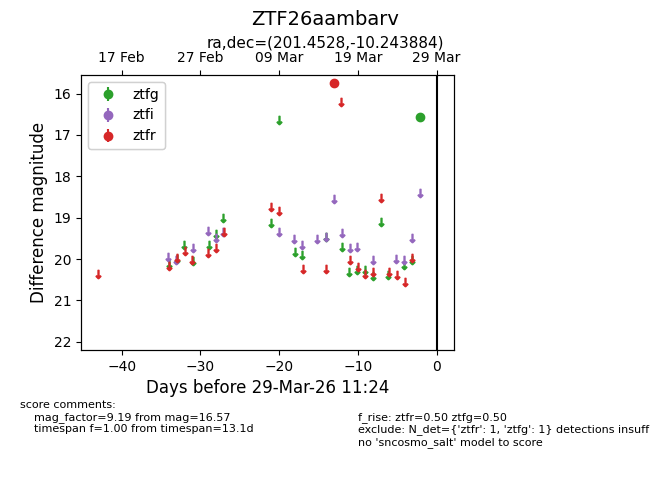
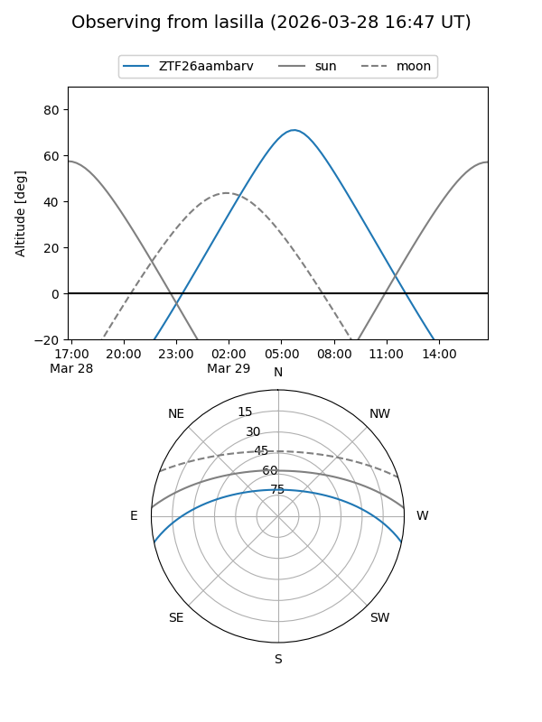
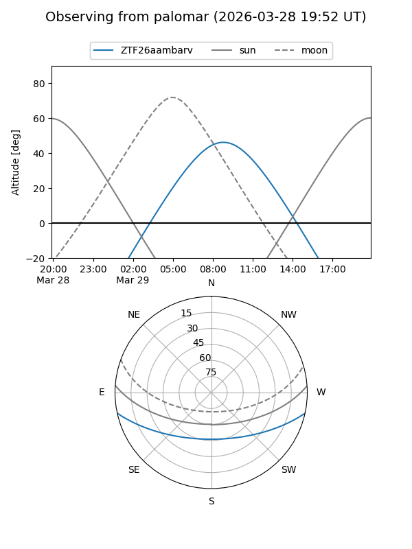

ZTF26aambarv
Target ZTF26aambarv at 2026-03-29 11:27
Aliases and brokers:
FINK: link
Lasair: link
ALeRCE: link
alt names
ZTF26aambarv (ztf,fink_ztf)
Coordinates:
equatorial (ra, dec) = 201.4528,-10.24388
equatorial (HMS+DMS) = 13:25:48.67,-10:14:37.98
galactic (l, b) = (316.6587,+51.70940)
Flags:
Photometry:
last ztfg=16.57, ztfr=15.75
1 ztfg, 1 ztfr detections
Lightcurve

Visibility


Additional plots